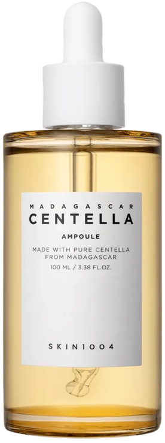
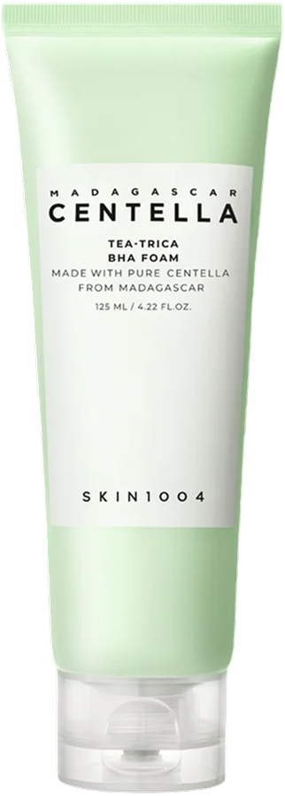
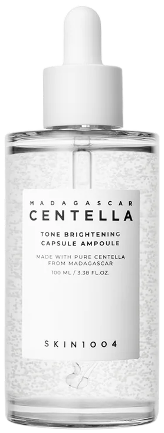

עור אדמומי, מגורה או מחסום עור פגוע
כשהעור מגיב בקלות, חווה התפרצות אקנה דלקתית, או סובל מאדמומיות ותחושת שריפה שדורשות הרגעה ושיקום מיידי.

אמפולת סנטלה- Madagascar Centella Ampoule
סרום הדגל של המותג המבוסס על 100% תמצית סנטלה אסיאטיקה טהורה ממדגסקר. הוא חודר עמוק לעור, מרגיע אדמומיות וגירויים באופן מיידי, מזרז ריפוי של פצעי אקנה ומחזק את מחסום העור. הפורמולה נקייה מרכיבים מיותרים והמרקם נוזלי וקליל כמו מים.
עור שמן, אקנה ונקבוביות חסומות
למי שסובלת מהפרשת שומן מוגברת, פצעונים דלקתיים או ראשים שחורים, ורוצה ניקוי עמוק וממוקד שמטפל בגורמי האקנה מבלי לייבש את העור.

סבון עץ התה - Madagascar Centella Tea-Trica BHA Foam
קצף ניקוי טיפולי המשלב חומצה סליצילית (BHA) הממיסה את הסבום השומני בתוך הנקבוביות, יחד עם קומפלקס Tea-Trica (עץ התה וסנטלה) להרגעת דלקות וחיסול חיידקי אקנה. הוא מנקה ביסודיות, מאזן את השומניות ומותיר את העור רענן ונקי באופן עמוק.
פיגמנטציה, כתמי פוסט-אקנה וגוון עור לא אחיד
כשהעור סובל מסימנים אדומים או כהים שנשארו מפצעונים בעבר, וצריך טיפול ממוקד להבהרה, שיקום ואיזון הגוון.

סרום הבהרה - Tone Brightening Capsule Ampoule
אמפולת סרום עוצמתית המבוססת על 77% תמצית סנטלה להרגעה, בשילוב ניאצינמיד וחומצה טרנקסמית להבהרת כתמי אקנה ופיגמנטציה. טכנולוגיית הקפסולות שומרת על הרכיבים הפעילים טריים, והמרקם קליל, נספג בשניות ואינו דביק.